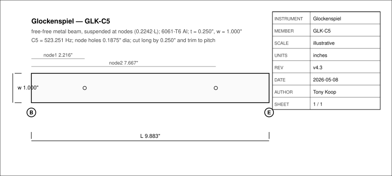
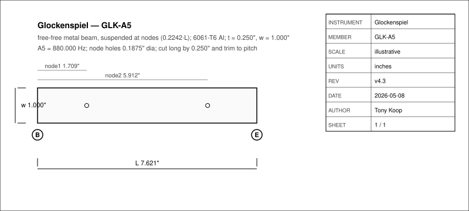
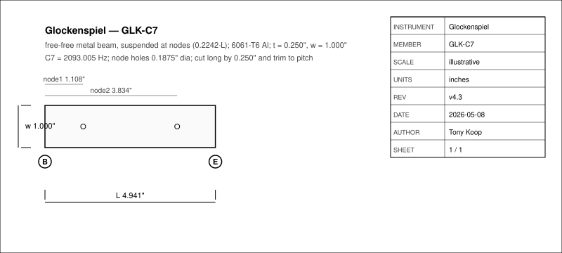
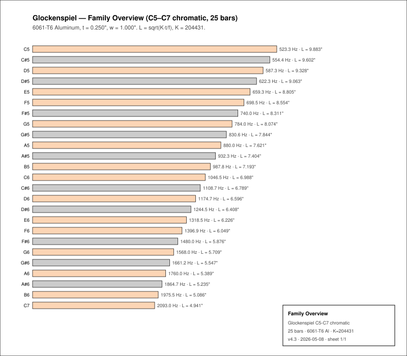
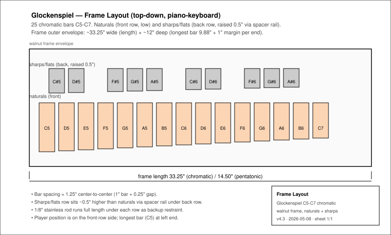
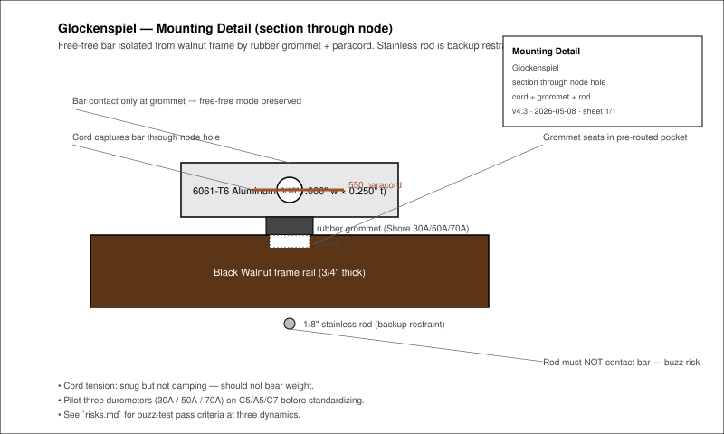

What this is
This repository is the instrument-maker-v4 v4.3 root-mode build packet for a glockenspiel. It turns the existing glockenspiel-design-table.xlsx scaffold into a shop-facing documentation set.
design.mdexplains the physics model (free-free metal beam), the K-calibration discipline, and the validation plan.family-spec.csvis the 25-bar C5–C7 chromatic schedule plus a 10-bar pentatonic block, extracted from workbook formulas.bom.csv,sourcing.csv, andcut-list.csvseparate stable specifications from supplier facts that should be verified before buying.drawings/,cad/,cnc/,jigs/,wolfram/, andsite/carry the technical handoff layers.jig-decision.mdturns the fixture assumptions into pilot-build gates before the full 25-bar run.
Part of the tonykoop/instrument-maker catalog.
Physics in one minute
A glockenspiel bar is a free-free beam. The first mode uses lambda_1 = 4.730, and the practical workbook model is:
f ~= K * t / L^2 L ~= sqrt(K * t / f)
For 6061-T6 aluminum, K = 204431, t = 0.250 in, w = 1.000 in. Length is the dominant pitch lever; width does not affect frequency. The cord/support points land at 0.2242·L and 0.7758·L.
NAF K2 corrections, vessel Helmholtz corrections, and cantilever wood K-tables do not apply to free-free metal beams. The honest correction loop is per-lot K calibration from pilot measurements.
Bar schedule (representative)
| Note | Frequency | Bar length | Width | Node 1 | Node 2 |
|---|---|---|---|---|---|
| C5 | 523.251 Hz | 9.883 in | 1.000 in | 2.216 in | 7.667 in |
| A5 | 880.000 Hz | 7.621 in | 1.000 in | 1.709 in | 5.912 in |
| C6 | 1046.502 Hz | 6.988 in | 1.000 in | 1.567 in | 5.422 in |
| A6 | 1760.000 Hz | 5.389 in | 1.000 in | 1.208 in | 4.181 in |
| C7 | 2093.005 Hz | 4.941 in | 1.000 in | 1.108 in | 3.834 in |
Full 25-bar chromatic schedule plus 10-bar pentatonic block in family-spec.csv. All values first-pass; pilot K calibration recomputes them.
Material decision matrix
| Material | K | Tone Character | Cost |
|---|---|---|---|
| 6061-T6 Aluminum (default) | 204431 | Bright, bell-like, long sustain | $ |
| Brass C260 | 145325 | Warm, mellow, classic glock tone | $$$ |
| Steel 1018 | 204267 | Harsh, metallic, very loud | $ |
| 304 Stainless | 198770 | Clean, modern, corrosion-resistant | $$ |
| Phosphor Bronze | 142593 | Rich, warm, excellent sustain | $$$$ |
To switch metals: replace K in family-spec.csv and recompute predicted_length_in = sqrt(K·t/f).
Drawings







Jig decision layer
jig-decision.md is the pilot-build stop/go record. It chooses a staged fixture set for C5, A5, and C7 before the full 25-bar aluminum run: a marking sled, V-block drill jig, foam strike-test cradle, three-block mounting prototype rig, and full-size frame layout template.
Full production stays blocked until the pilot rows in validation.csv have measured values for flat_bar, post_trim, mounted, and framed.
Build photos
No process photos committed yet. The shotlist (photo-shotlist.md) documents the planned image set for intake, bar fabrication, mounting, frame, and validation. Photos will replace the gradient hero block at the top of this page once the first pilot bars are cut.
Status
| Area | Status |
|---|---|
| Workbook scaffold | done — source table in glockenspiel-design-table.xlsx |
| C5–C7 bar schedule | done — see family-spec.csv |
| Pentatonic art-fair variant | done — second block in family-spec.csv |
| CNC operation plan | generated — cnc/cnc-plan.json and cnc/setup-sheet.md (frame routing only; bar work is bench-top) |
| SolidWorks handoff | prepared as CSV/Markdown contract; no native CAD yet |
| Wolfram source | prepared as wolfram/glockenspiel-wolfram-model.wl; notebook execution pending local Wolfram |
| Jig decision layer | done — see jig-decision.md |
| Build photos | pending first shop build |
| Measured tuning data | pending pilot run (C5/A5/C7) |
Repository
Source and full packet on GitHub: tonykoop/glockenspiel. License: CC BY 4.0.